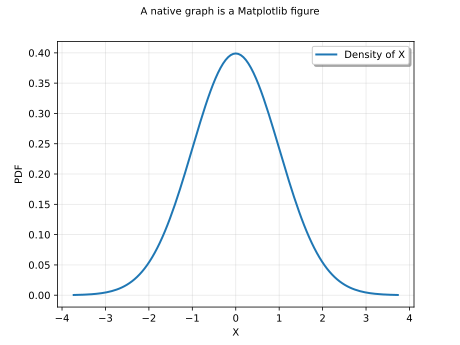
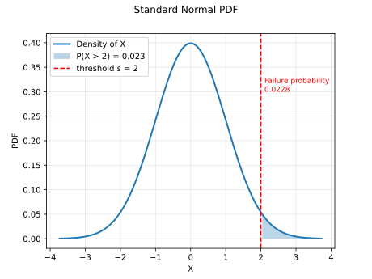
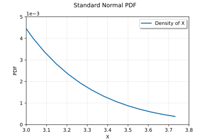
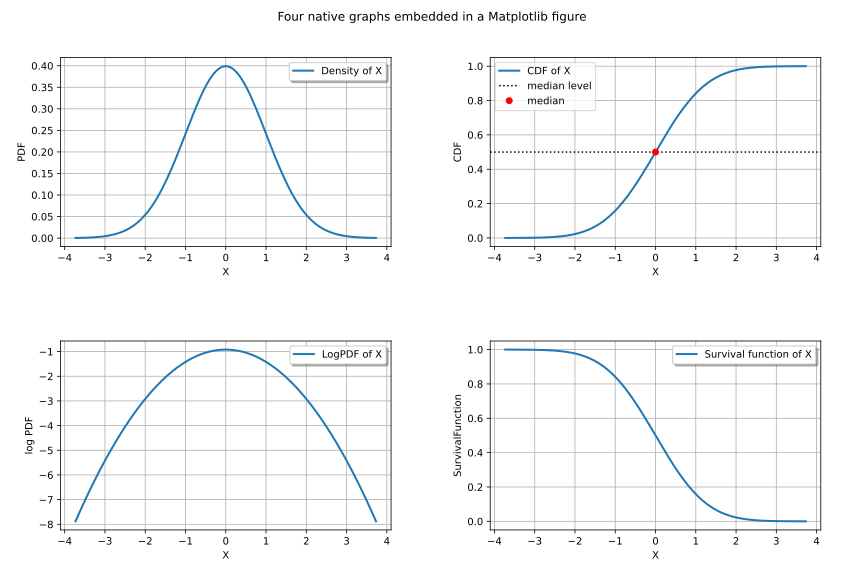

Note
Go to the end to download the full example code.
Combine native graphics with matplotlib¶
This example shows how to combine native graphs with matplotlib.
Every Graph displayed with View
is a matplotlib figure. Hence we can:
retrieve the matplotlib
FigureandAxesfrom aViewand enrich them with matplotlib,draw one or several native graphs into an existing matplotlib figure.
The example uses a standard Normal distribution: its PDF is drawn using the library, the failure threshold, the shaded tail and the annotations are added with matplotlib.
Create a native graph and retrieve the matplotlib objects¶
We start from a basic native graph: the density of a Normal distribution.
Every graph displayed with View is a matplotlib
getFigure() and
getAxes() give access to the underlying
matplotlib objects. Any matplotlib customization then applies.
import openturns as ot
import openturns.viewer as otv
import matplotlib.pyplot as plt
ot.RandomGenerator.SetSeed(0)
normal = ot.Normal()
graph_pdf = normal.drawPDF()
graph_pdf.setTitle("Standard Normal PDF")
graph_pdf.setLegends(["Density of X"])
graph_pdf.setXTitle("X")
view = otv.View(graph_pdf)
fig = view.getFigure()
ax = view.getAxes()[0]
ax.grid(True, alpha=0.3)
ax.set_xlabel("X")
fig.suptitle("A native graph is a Matplotlib figure", fontsize=10)

Text(0.5, 0.98, 'A native graph is a Matplotlib figure')
Customize graphs with matplotlib¶
Let us highlight the event X > 2.
The curve itself was drawn with the library: we reuse its line data
to shade the tail exactly under the curve, then add a threshold
line and a text.
threshold = 2.0
prob = 1.0 - normal.computeCDF(threshold)
# Fresh view to keep the previous figure simple.
view = otv.View(graph_pdf)
ax = view.getAxes()[0]
# Data of the PDF curve drawn with the library.
line = ax.get_lines()[0]
x, y = line.get_xdata(), line.get_ydata()
mask = x >= threshold
ax.fill_between(x[mask], y[mask], alpha=0.3, label=f"P(X > 2) = {prob:.3f}")
ax.axvline(threshold, color="red", linestyle="--", label="threshold s = 2")
ax.text(
threshold + 0.1,
0.3,
f"Failure probability\n{prob:.4f}",
color="red",
fontsize=9,
)
# sphinx_gallery_thumbnail_number = 2
# The legend must be redrawn after adding `matplotlib` artists.
ax.legend()
ax.grid(True, alpha=0.3)

Apply a matplotlib transform¶
Any Axes method applies, e.g. a manual rescaling to inspect the upper tail.
view_scale = otv.View(graph_pdf, figure_kw={"figsize": (6, 4)})
new_scale = view_scale.getAxes()[0]
new_scale.set_xlim([3.0, 3.8])
new_scale.set_ylim([0.0, 0.005])
new_scale.grid(True, which="both", alpha=0.3)
new_scale.set_xlabel("X")

Text(0.5, 10.679999999999996, 'X')
Draw native graphs into an existing matplotlib figure¶
The reverse direction is also possible: create the matplotlib figure
first with subplots(), then draw each
native graph on a chosen Axes with the figure and axes
arguments. Extra matplotlib-only elements can then be mixed freely.
Function subplots_adjust of matplotlib can be used to separate the graphs
within the grid layout.
graph_cdf = normal.drawCDF()
graph_cdf.setLegends(["CDF of X"])
graph_cdf.setXTitle("X")
graph_logpdf = normal.drawLogPDF()
graph_logpdf.setLegends(["LogPDF of X"])
graph_logpdf.setXTitle("X")
graph_survival = normal.drawSurvivalFunction()
graph_survival.setLegends(["Survival function of X"])
graph_survival.setXTitle("X")
fig, axs = plt.subplots(2, 2, figsize=(12, 8))
_ = otv.View(graph_pdf, figure=fig, axes=[axs[0, 0]])
_ = otv.View(graph_cdf, figure=fig, axes=[axs[0, 1]])
_ = otv.View(graph_logpdf, figure=fig, axes=[axs[1, 0]])
_ = otv.View(graph_survival, figure=fig, axes=[axs[1, 1]])
# Pure `matplotlib` additions: median point and decorations.
axs[0, 1].axhline(0.5, color="black", linestyle=":", label="median level")
axs[0, 1].plot([0.0], [0.5], "ro", label="median")
axs[0, 1].legend()
fig.suptitle("Four native graphs embedded in a Matplotlib figure")
fig.subplots_adjust(
left=0.07, right=0.95, bottom=0.08, top=0.90, wspace=0.3, hspace=0.5
)
otv.View.ShowAll()
